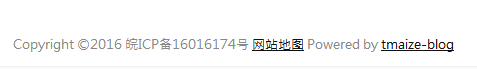
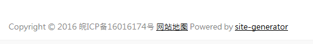
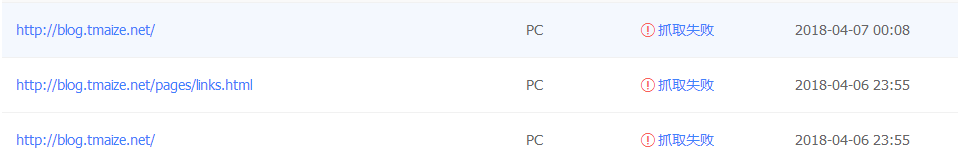
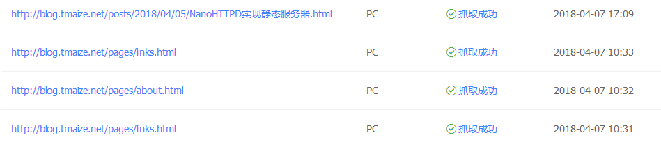
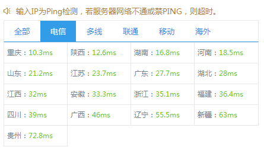
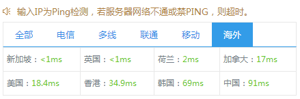

折腾了几天site-generator也写完了，把旧主题重新用Freemark写了下，现在把生成的静态文件部署到了百度的BAE
把域名国内的线路CNAME解析到的百度的BAE
国外的线路CNAME解析到的Github Pages
可以说是无缝切换了，唯一的就区别如下:
使用国外ip访问博客底部信息如下

使用国内ip访问博客底部信息如下

文章的管理不变
文章的管理还是不变，全部托管在Github，在里面添加了一个site-generator的主题目录，文章资源都是引用之前的（site-generator这一点设计的还是不错的），同时把site-generator生成的静态文件放到.gitignore里面
同时在输出静态文件的目录再建一个BAE的git项目。BAE的也是通过git发布也是很方便的，每次都不要上传所有文件了
现在添加文章只需要先push到Github，然后运行下site-generator的生成脚本，再到生成目录push到BAE就OK了
爬虫生效了
github pages对百度的爬虫很不友好，几乎是无法收录
现在国内博客的托管在BAE也终于能被爬虫抓到了


访问速度更快了

